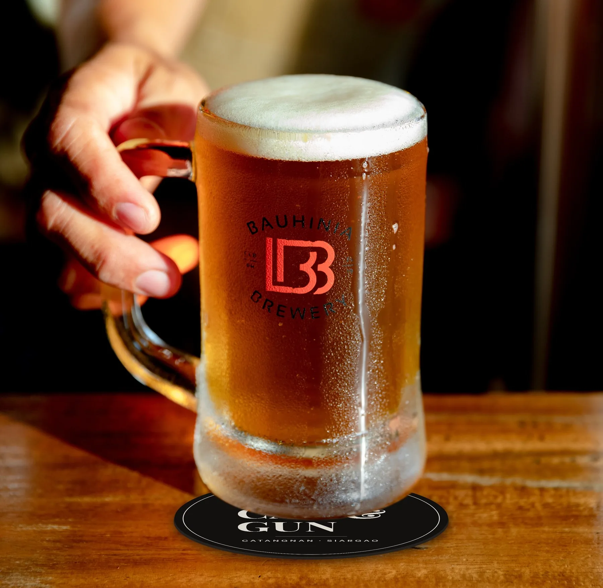

Sticker editor
The stickers of the house: change words and colours, design new stickers and get the files for the printer.
Chapter 1 of 9 · This is the Sticker editor.
In this video
What the video shows
Every chapter with the sentence from the video. A click on the time plays the video from there.
- 01This is the Sticker editor.
- 02All stickers.
- 03Quick changes.
- 04Text, font and colour.
- 05More tools.
- 06Print check.
- 07The print file.
- 08Save and publish.
- 09A new sticker.
Up next
Next guide: Print & feed
The guides follow the order of the rooms.

H1:05
Print & feed
Templates for coasters, beer mats, signs, posters and Instagram posts, as PDFs for the printer and as images.
10 chaptersWatch the guide →

Room 06
Back to Print & Instagram
The room with this guide, the animation that shows how it works, the recommendation for use and the learnings.
Print & InstagramEnter the room →